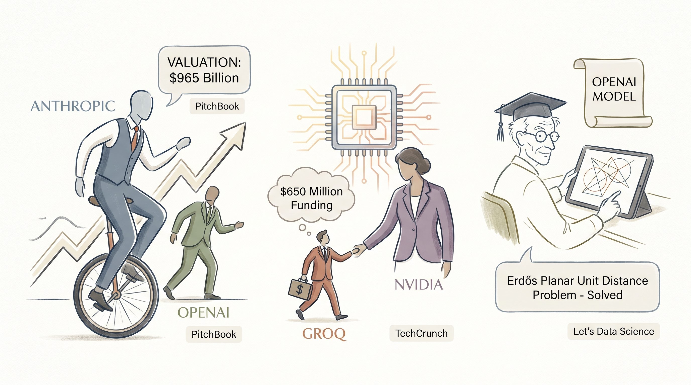

Anthropic完成H轮融资，估值达965亿美元超越OpenAI，成为全球估值最高的AI初创企业。
两克伴AIGC日报
2026-05-31 星期日

本期关注：Anthropic在估值竞赛中超越OpenAI，H轮融资估值达9650亿美元 - PitchBook、在Nvidia 200亿美元“非收购式招聘”之后，AI芯片初创公司Groq据报道正在融资6.5亿美元——TechCrunch、OpenAI模型解决埃尔德什平面单位距离问题 - Let's Data Science、Parallax：用于语言建模的参数化局部线性注意力
📰 行业动态
AI芯片初创公司Groq在新一轮融资中筹集6.5亿美元，用于发展基于自研AI芯片的推理云服务。
OpenAI内部模型证明了保罗·埃尔德什1946年提出的平面单位距离问题，在数学领域取得重大突破。
🔥 今日焦点
最近学术界在注意力机制上有了新动作。Parallax 提出了一种名为“参数化局部线性注意力”的新方法，目标是打破传统注意力结构近十年来的停滞。简单来说，它让模型在处理长文本时能更高效地“权衡”需要关注的信息，同时降低计算复杂度。目前在语言建模基准测试上已经展现出不错的提升，训练收敛速度也有改善。这件事值得关注，是因为注意力机制是 LLM 的核心底层模块，任何架构层面的突破都可能引发连锁反应——虽然目前还停留在研究阶段，但如果被主流框架采纳，可能会对未来的模型训练和推理成本产生不小影响。
这件事的另一个意义在于，它提醒我们 LLM 的优化不只有“堆参数”一条路。学术界正在从数学和工程两个方向同时挖潜，寻找在不显著牺牲性能的前提下压缩成本的可能性。这种探索对于整个行业的长远健康发展其实是件好事。
如果你做过 AI 代理的开发，可能会遇到这个痛点：当你想让 agent 同时探索多条路径（比如 RL rollout、best-of-N 采样、并行写代码）时，每条分支都得重新跑一遍 prefill——即使大部分输入是完全相同的。这个叫 Thaw 的工具把 Git 分支的思想搬到了运行中的 LLM 上，让你可以“fork”一个 agent 的状态，省掉重复的 prefill 计算。开发者自己做了一些 benchmark，对于需要大量分支的场景，token 消耗能省不少。
这不算是那种会刷屏的大新闻，但它解决的是一个非常具体的工程问题。AI 代理工作流正在变得越来越复杂，对并行探索的需求只会增加。Thaw 的出现说明社区已经开始从“让模型更强”转向“让模型用起来更高效”——这个转变值得注意。
🐦 Ta们说
> "Open source AI is exponentially taking off
There are several very good models to choose from including Kimi, DeepSeek and GLM
> "AI safety can't happen behind closed doors! Super cool to see that the @AISecurityInst is releasing its evals, datasets, and models in the open on @huggingface, so researchers everywhere can scrutinize, reproduce, and build on them: https://t.co/pLaKgl0oH1 https://t.co/yV0XeSyage"
**解读**: Delangue 点赞 AISecurityInst 把安全评估、数据集和模型都开源到 HuggingFace 上。他喊出"AI安全不能关起门来做"，强调开放能让全球研究者检验、复现和基于此继续开发。这个趋势值得注意——AI safety 从"保密研发"转向"开放共建"，某种程度上也是对去年闭源派的一种回应。安全这事，透明才能建立信任。
> "Anthropic’s chance of being long-term
profitable is greater than OpenAI’s. But still not huge."
**解读**: Marcus 抛出个有点反直觉的判断：Anthropic 比 OpenAI 更有长期盈利的可能，但"still not huge"。作为一个AI批评老将，他这话说得很克制，暗示AI公司的商业化前景其实没有外界想象的那么乐观。当然他也承认不是完全不看好，只是提醒别把"技术厉害"和"能赚钱"画等号——这观点在当下AI烧钱大战里挺值得琢磨的。
🛠️ 产品推荐
HermesBench是一款专注于个人AI Agent工作流可靠性评估的开源基准测试框架。随着AI Agent在各领域的广泛应用，其工作流的稳定性和可靠性成为关键挑战。该工具通过系统化的评估方法，帮助开发者全面测试AI Agent在实际任务执行中的表现，识别潜在故障点和性能瓶颈。
HermesBench提供标准化的测试指标和可定制的评估场景，涵盖任务完成率、错误恢复能力、响应一致性等多个维度。开发者可以利用该框架对Agent进行持续性评估，量化其在复杂工作流中的稳定性表现。通过生成详细的测试报告，用户能够直观了解Agent的薄弱环节，为优化和迭代提供数据支撑。
这是一款开源代理工具，旨在为 Claude Code 用户提供更灵活的 AI 模型选择。它通过桥接技术，使用户能够在 Claude Code 中直接调用 Kimi（月之暗面）和 OpenAI 的订阅服务，实现多 AI 模型的统一接入与管理。
核心功能方面，该工具充当中间层，将 Claude Code 的请求转发至用户偏好的 AI 服务提供商，同时保持与原生体验的一致性。开发者无需复杂配置，即可无缝切换不同的 AI 能力。